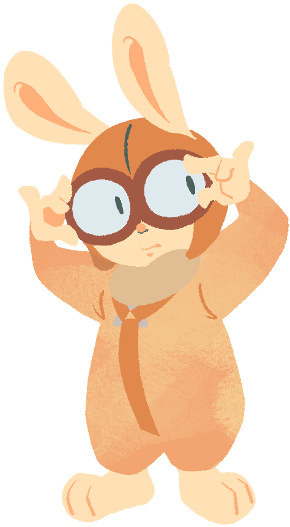

Teacher Hare (Male)Also referred to as PROF. RABBIT in Super Smash Bros. Brawl, he is Kururin's mentor and best friend. He was a co-worker of Kururin's father Totorin, before the latter became the leader of the Magic Group. He built the Action Helirins for Kururin to use in Kururin Squash! In Kururin Paradise, he went "missing" with Kururin's family (making it the only game where he had to be rescued,) but it turned out that it was a staged surprise for Kururin's birthday. Also in Kururin Paradise, it appears he built a Mini Helirin, but it's never used in gameplay. |
 |